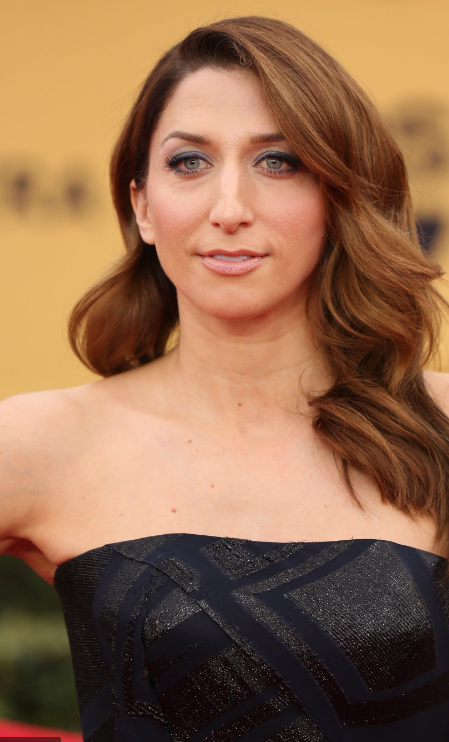

Chelsea Vanessa Peretti (Contra Costa County, 20 de fevereiro de 1978) é uma comediante, atriz e escritora americana. Ela é mais conhecida por interpretar Gina Linetti na série de comédia policial Brooklyn Nine-Nine
Peretti nasceu em 20 de fevereiro de 1978, no Condado de Contra Costa, Califórnia. Sua mãe é judia, enquanto seu pai possui ascendência inglesa e italiana. Ela foi criada em Oakland, Califórnia. Ela tem dois irmãos e uma irmã; seu irmão mais velho, o empresário da Internet Jonah Peretti, foi um dos fundadores do BuzzFeed e do The Huffington Post. Peretti estudou na Escola Preparatória para Faculdade em Oakland. Ela se mudou para Nova York em 1996 para estudar na Barnard College, durante o qual ela teve um ano de estudos no exterior em seu primeiro ano na London's Royal Holloway,formando-se em 2000. Ela frequentou a escola primária com Andy Samberg, seu coprotagonista em Brooklyn Nine-Nine, e a escola secundária com o comediante Moshe Kasher.